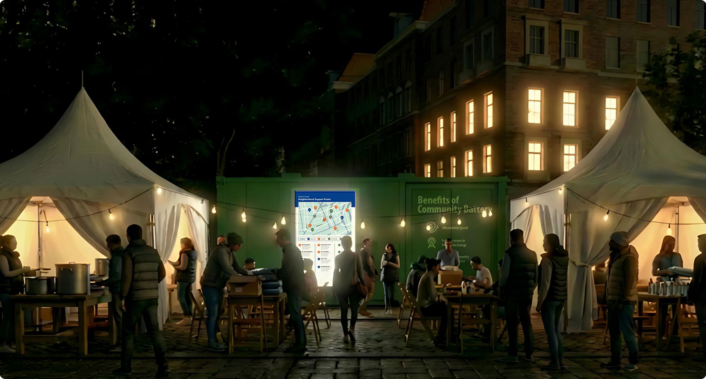
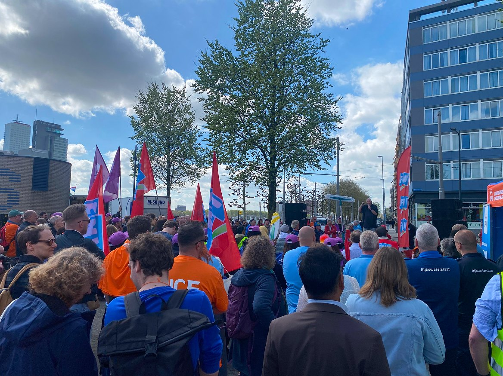
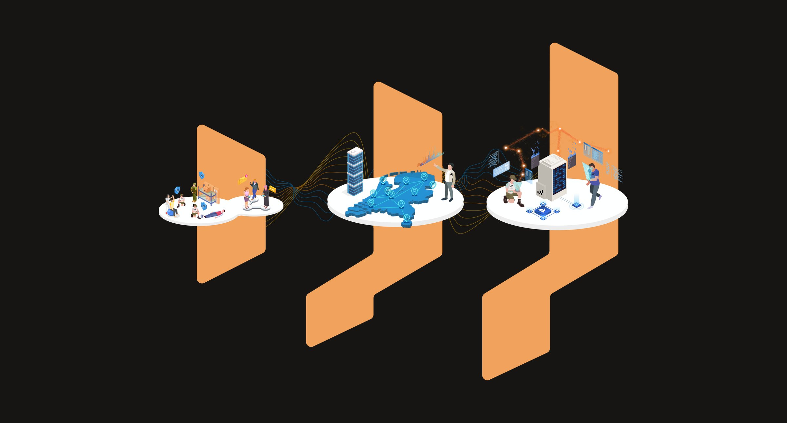
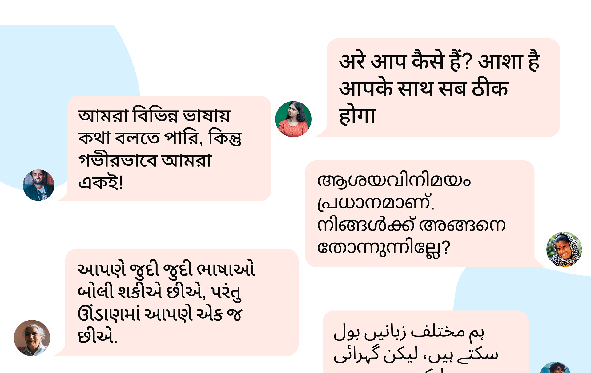
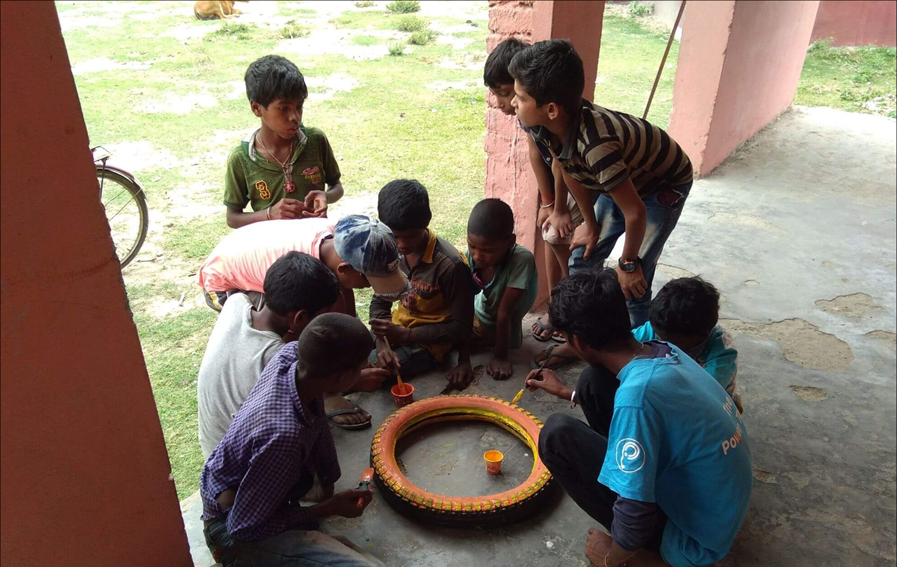
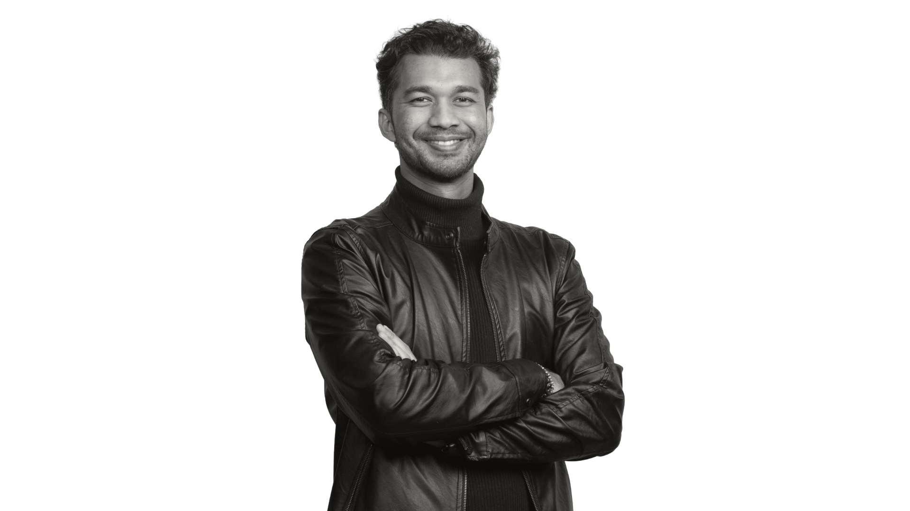

I enjoy working where complex problems meet ambitious ideas, questioning assumptions and connecting the dots.
See my work ↓Community batteries as a strategic asset during a 72-hour power outage.

Turning frontline experiences into collective input for national labour agreements.

Building a culture of collective responsibility and mutual support for a more resilient society.

Reimagining the typing experience in Indic languages for the next billion smartphone users.

Transforming schools into vibrant learning centres through community-led participatory design.

Community batteries as a strategic asset during a 72-hour power outage.
Project themes
Turning frontline experiences into collective input for national labour agreements.
Project themes
Building a culture of collective responsibility and mutual support for a more resilient society.
Project themes
Reimagining the typing experience in Indic languages for the next billion smartphone users.
Project themes
Transforming schools into vibrant learning centres through community-led participatory design.
Project themes
Based in Rotterdam/NL. 5 years of experience across UX Design and Research, Project Management, and Systems Thinking – I move between the finer details and the bigger picture.

I bring a hands-on approach to my projects, working directly with people to shape ideas into tangible outcomes.
CV and Work Experience →Got an idea or a project that you'd like to discuss over a coffee? I'd love to hear about it